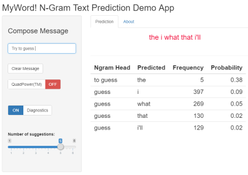

I recently completed the Coursera / Johns Hopkins University “Data Science Specialization”, a series of ten courses culminating in a Capstone project in which we students had to develop a text-prediction application. This was to be demonstrated in a Shiny App. Below is my “promotional slide deck” for this text-prediction application. Shiny is a powerful framework for deploying interactive R web apps, but I’m still a bit of a noob when it come’s to creating a polished app - to be worked upon!
“MyWord!": Making Typing Easier on Smartphones
MyWord! is a web app demo that accepts typed input and predicts the next word. The target for real-world application is smartphone messaging. This implies limited availability of memory and processing power to run our model in.
- Ease of use: just start typing a sentence, the predicted next word is displayed when typing stops.
- Good user experience: rapid initialization; next word prediction in less than 0.1 sec.
- Acceptable accuracy: approx. 11-12% (top suggested word, N=700 tests).
- Optional “QuadPower” mode (using quadgrams) to boost accuracy at expense of slight response time increase
“MyWord!” Key Features
- Near-instantaneous prediction of next word
- Candidate word list with optional likelihood values
- Very small memory footprint: < 3MB on flash/disk < 21MB in RAM
- Written in “tidyverse” style using easily interpretable tibbles - easy for developers to add new features

Prediction Algorithm and Implementation
-
The language model consists of 4-, 3-, 2- and 1-gram tables computed from a huge training corpus (1million+ lines of text)
-
The tables are generated based on the conditional probability as follows:
-
The most recently entered words are matched against model data.
-
The next word prediction is the top item in the table of matches, ordered as most probable first, with a bias to prefer longer n-grams over the shorter.
Future Work & References
-
Reduce memory even further using an indexed vocabulary of words, with n-gram tables referencing it using keys
-
Increase response time using data table (as sparse matrices) instead of data frames (this also allow use of keys as above)
-
Add the ability to handle common American-English and British-English spelling variants e.g. colour/color
-
Investigate prediction accuracy improvements using smoothing and interpolation approaches e.g. Kneser-Ney
Code: Github repo App: MyWord app Refs: Original Corpus